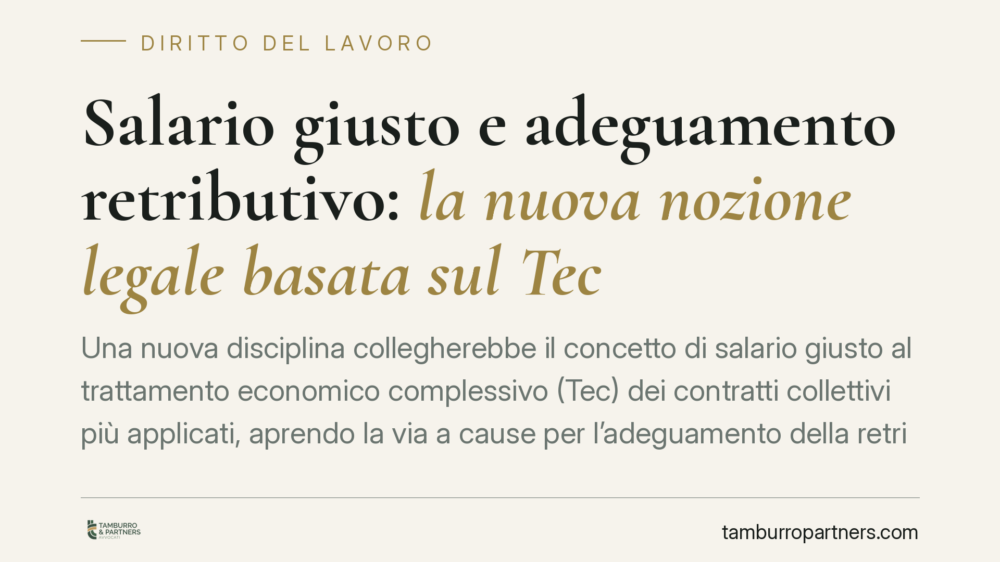

Salario giusto e adeguamento retributivo: la nuova nozione legale basata sul Tec
Una nuova disciplina collegherebbe il concetto di salario giusto al trattamento economico complessivo (Tec) dei contratti collettivi più applicati, aprendo la via a cause per l'adeguamento della retribuzione. Attenzione: gli estremi normativi citati dalla fonte sono successivi alla nostra data di conoscenza e vanno verificati prima di ogni azione. Vediamo principi consolidati, implicazioni e passi concreti.

Avvertenza preliminare sulle fonti
I riferimenti alla L. n. 112/2026 (conversione del D.L. 62/2026), art. 7, e alla data di entrata in vigore del 1° maggio 2026 non sono al momento verificabili [DA VERIFICARE]. Si tratta di normativa con estremi successivi alla nostra base di conoscenza. Prima di assumere qualsiasi iniziativa processuale occorre controllare numero, data e pubblicazione in Gazzetta Ufficiale, nonché il testo effettivo dell'articolo. In assenza di conferma, i principi qui esposti restano validi solo nella misura in cui già discendono dal diritto vigente (art. 36 Cost. e art. 2099 c.c.).
Inquadramento normativo
Il principio di una retribuzione «proporzionata alla quantità e qualità» del lavoro e «sufficiente ad assicurare un'esistenza libera e dignitosa» è già scolpito nell'art. 36 della Costituzione. Da questa norma la giurisprudenza ricava da decenni il potere del giudice di correggere compensi inadeguati, utilizzando come parametro i minimi dei contratti collettivi di categoria (art. 2099 c.c., sulla determinazione della retribuzione).
La novità descritta dalla fonte sposterebbe il parametro dal solo minimo tabellare al trattamento economico complessivo (Tec): non la sola paga base, ma l'insieme delle voci retributive previste dal contratto collettivo di riferimento (mensilità aggiuntive, indennità, scatti, elementi fissi). Il raccordo con il diritto europeo è dato dalla Direttiva (UE) 2022/2041 sui salari minimi adeguati [numerazione e denominazione da confermare], che impegna gli Stati a promuovere la contrattazione collettiva e retribuzioni adeguate.
Minimo tabellare e Tec: la distinzione che conta
Il punto centrale è il salto di parametro. Il minimo tabellare è la paga base prevista dal livello di inquadramento. Il Tec è il valore economico complessivo del rapporto secondo il contratto collettivo leader, cioè quello sottoscritto dai sindacati comparativamente più rappresentativi del settore.
Ancorare la nozione di salario giusto al Tec significa che non basta allinearsi al minimo di tabella di un contratto qualsiasi: rileva il trattamento globale garantito dal contratto di riferimento. È così che si prova a contrastare i cosiddetti contratti pirata, siglati da sigle poco rappresentative al solo scopo di comprimere il costo del lavoro.
Implicazioni pratiche
Per il lavoratore si amplierebbe la base di calcolo dell'eventuale adeguamento: la differenza richiedibile non riguarderebbe solo la paga base, ma l'intero divario rispetto al Tec del contratto leader.
Per il datore di lavoro cresce l'esposizione. Chi applica un contratto meno oneroso rischia azioni di adeguamento e, negli appalti, va ricordata la responsabilità solidale del committente per i trattamenti retributivi dovuti ai dipendenti dell'appaltatore (art. 29, comma 2, D.lgs. 276/2003): il parametro più alto si riflette a cascata sulla filiera.
Resta decisivo il profilo della prescrizione. I crediti retributivi si prescrivono in cinque anni (art. 2948, n. 4, c.c.). La giurisprudenza è però oscillante sulla *decorrenza*: per i rapporti privi di stabilità reale, il termine tende a decorrere dalla cessazione del rapporto, non nel corso di esso, proprio per evitare che il timore del licenziamento induca il lavoratore a non agire. Chi valuta un'azione deve ricostruire con precisione il periodo recuperabile.
Cosa fare in concreto
Per il lavoratore:
- Recupera le buste paga dell'intero periodo utile e individua il contratto collettivo applicato dal datore.
- Identifica il contratto collettivo leader del tuo settore e confronta il tuo trattamento con il relativo Tec, non solo con il minimo tabellare.
- Verifica la decorrenza della prescrizione quinquennale (art. 2948, n. 4, c.c.) rispetto alla tua situazione, tenendo conto dell'incertezza sulla decorrenza.
- Prima di agire, fai confermare da un professionista gli estremi e la vigenza effettiva della normativa di riferimento.
Per il datore di lavoro:
- Mappa i contratti collettivi applicati e misurane lo scostamento dal Tec dei contratti leader.
- Negli appalti, audita i trattamenti applicati dagli appaltatori, data la responsabilità solidale.
- Documenta e, se necessario, riallinea i trattamenti per ridurre il contenzioso potenziale.
Conclusioni
La direzione è chiara: dal minimo tabellare al trattamento complessivo. Consigliamo di non assumere iniziative sulla base dei soli estremi normativi circolati, ma di verificarne la vigenza e di impostare ogni valutazione sui principi già consolidati dell'art. 36 Cost.
---
Contributo informativo a cura di Tamburro & Partners – Avv. Giuseppe Tamburro. Non costituisce parere legale.
Ogni storia di lavoro ha i suoi tempi.
Se gestisci HR e vuoi un confronto su contenzioso, ispezioni o licenziamenti, scrivi allo studio. Ti rispondiamo entro un giorno lavorativo.